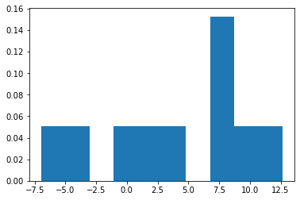
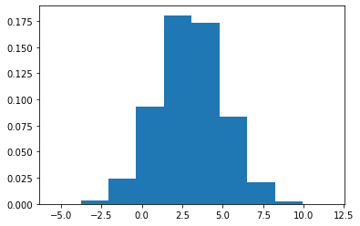

# Generate pseudo data from normal distribution with mean 3 and sd 5
import numpy as np
N = 100000
mu, sigma = 3, 5 # mean and standard deviation
data = np.random.normal(mu, sigma, N)
avg = np.mean(data)
print("%.4f"%avg)2.9557Generate pseudo data from normal distribution with mean 3 and sd 5
# Generate pseudo data from normal distribution with mean 3 and sd 5
import numpy as np
N = 100000
mu, sigma = 3, 5 # mean and standard deviation
data = np.random.normal(mu, sigma, N)
avg = np.mean(data)
print("%.4f"%avg)2.9557import matplotlib.pyplot as plt
count, bins, ignored = plt.hist(data, 10, density=True)
import numpy as np
N = 100000
# Generate pseudo data from normal distribution with mean 3 and sd 2
mu_1, sigma_1 = 3, 2 # mean and standard deviation
data_1 = np.random.normal(mu_1, sigma_1, N)
avg_1 = np.mean(data_1)
print("%.4f"%avg_1)3.0046# Generate pseudo data from normal distribution with mean 5 and sd 2
mu_2, sigma_2 = 7, 2 # mean and standard deviation
data_2 = np.random.normal(mu_2, sigma_2, N)
avg_2 = np.mean(data_2)
print("%.4f"%avg_2)7.0040# Sum two data sets, and then get the average of these two
summed_data = data_1 + data_2
avg_merged = np.mean(summed_data)
print("%.4f"%avg_merged)10.0086# multiply the first data set with a constant
factor_c_data = data_1 * 5
avg_c_f = np.mean(factor_c_data)
print("%.4f"%avg_c_f)15.0228# add a constant c to the first data set
add_c_data = data_1 + 5
avg_c_a = np.mean(add_c_data)
print("%.4f"%avg_c_a)8.0046# Generate pseudo data from normal distribution with mean 3 and different variances
import numpy as np
N = 100000
# Generate pseudo data from normal distribution with mean 3 and sd 2
mu_1, sigma_1 = 3, 2 # mean and standard deviation
data_1 = np.random.normal(mu_1, sigma_1, N)
var = np.var(data_1)
print("%.4f"%var)
sd = np.std(data_1)
print("%.4f"%sd)4.0322
2.0080# follow the range of the data values on the horizontal axis, for different values of sigma
import matplotlib.pyplot as plt
count, bins, ignored = plt.hist(data_1, 10, density=True)
import numpy as np
N = 100000
# Generate pseudo data from normal distribution with mean 3 and sd 2
mu_1, sigma_1 = 3, 2 # mean and standard deviation
data_1 = np.random.normal(mu_1, sigma_1, N)
data_1c_f = data_1 * 3
var_cf = np.var(data_1c_f)
print("%.4f"%var_cf)35.98data_1c_a = data_1 + 3
var_ca = np.var(data_1c_a)
print("%.4f"%var_ca)4.00